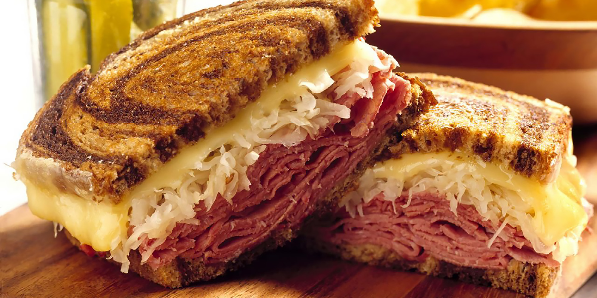

Reuben Sandwich

Description
Simple, delicious sandwich for a tasty lunch. Makes for a quick snack or
can be paired with your choice of soup. Cook time is 10 minutes.
Preparation time is 15 minutes. This recipe makes us a total of
4 servings.
Ingredients
- 2 tablspoons butter
- 8 slices rye bread
- 8 slices deli sliced corned beef
- 8 slices Swiss cheese
- 1 cup sauerkraut, drained
- 1/2 cup Thousand Islands dressing
Steps
- Preheat a large skillet or griddle on medium heat.
- Lightly butter one side of all bread slices. Spread non-buttered sides
with Thousand Islands dressing. On 4 bread slices, layer 1 slice Swiss
Cheese, 2 slices corned beef, 1/4 cup sauerkraut and second slice of
Swiss cheese. Top with remaining bread slices, buttered sides facing out.
- Grill sandwiches until both sides are golden brown, about 5 minutes per
side. Serve hot.